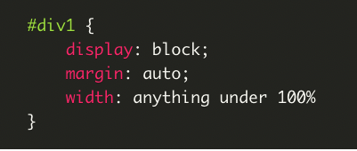
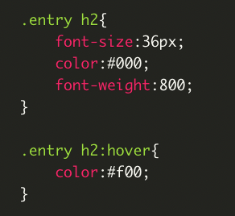
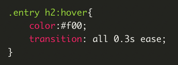

Absolute positioning

position:absolute;
top:20px;
right:20px
If you want control over where an element lives on our website at all times, absolute positioning is the key to making this happen.
Content

position:absolute;
top:20px;
right:20px
A div (or any other element) can be centered by adding the block property to it, and then using auto margins
Vertical alignment

.nav li{
line-height:50px;
height:50px;
}
You will use this in a CSS navigation menu, I can almost guarantee that. The key is to make the height of the menu and the line-height of the text the same.
Hover effects

.entry h2{
font-size:36px;
color:#000;
font-weight:800;
}
.entry h2:hover{
color:#f00;
}
This is used for buttons, text links, bock sections of your site, icons, and more.
Transition

.entry h2:hover{
color:#f00;
transition: all 0.3s ease;
}
For hover effects, like with menus or on images in your website, you don’t want colors snapping too quickly to the end result.